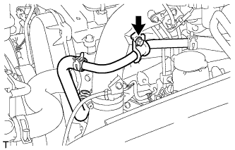
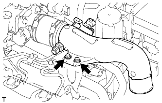
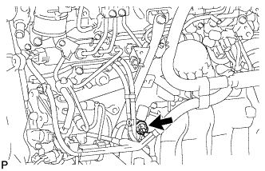
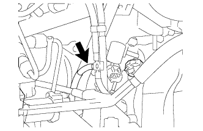
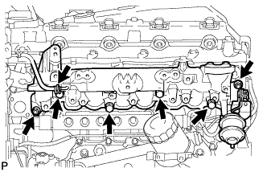

ВПУСКНОЙ КОЛЛЕКТОР (для моделей без DPF) > СНЯТИЕ |
| 1. ОТСОЕДИНИТЕ ПРОВОД ОТ ОТРИЦАТЕЛЬНОГО ВЫВОДА АККУМУЛЯТОРНОЙ БАТАРЕИ |
| 2. СНИМИТЕ ЭЛЕКТРИЧЕСКИЙ КЛАПАН УПРАВЛЕНИЯ РОГ В СБОРЕ (для моделей с системой РОГ) |
Снимите электрический клапан управления РОГ в сборе (Нажмите здесь).
| 3. ОТСОЕДИНИТЕ ВХОДНОЙ ПАТРУБОК ОТОПИТЕЛЯ (для моделей без системы РОГ) |
|  |
Выверните болт и отсоедините входной патрубок отопителя.
| 4. ОТСОЕДИНИТЕ ВАКУУМНУЮ ТРУБКУ № 4 В СБОРЕ (для моделей без системы РОГ) |
 |
Выверните болт и отсоедините вакуумную трубку № 4.
| 5. СНИМИТЕ ВПУСКНОЙ ПАТРУБОК № 1 (для моделей без системы РОГ) |
 |
Отсоедините 3 разъема от датчика температуры воздуха на впуске, электродвигателя привода дроссельной заслонки и датчика абсолютного давления в коллекторе.
Снимите 2 зажима.
Отсоедините вакуумный шланг от датчика абсолютного давления в коллекторе.
 |
Ослабьте 2 зажима шланга и снимите воздушный шланг № 1.
 |
Ослабьте зажим воздушного шланга промежуточного охладителя.
|  |
Выверните 2 болта и снимите впускной патрубок № 1.
| 6. СНИМИТЕ КРОНШТЕЙН КОРПУСА ДРОССЕЛЬНОЙ ЗАСЛОНКИ (для моделей без системы РОГ) |
 |
Отсоедините вакуумный шланг.
Выверните болт и снимите газовый фильтр с кронштейном газового фильтра.
Выверните 2 болта и снимите кронштейн корпуса дроссельной заслонки.
| 7. СНИМИТЕ ТОПЛИВНЫЕ ТРУБКИ ВЫСОКОГО ДАВЛЕНИЯ № 1, № 2 И № 3 В СБОРЕ (для моделей без системы РОГ) |
 |
Отверните 2 гайки и снимите зажим топливной трубки высокого давления № 3.
 |
Выверните 2 болта и снимите 2 зажима топливной трубки высокого давления № 2.
 |
С помощью разрезной головки на 17 мм ослабьте гайки штуцеров и снимите топливные трубки высокого давления № 1, № 2 и № 3.
| *a | Со стороны форсунки |
| *b | Со стороны топливной системы Common Rail |
| 8. СНИМИТЕ ОПОРУ ПАТРУБКА ПОДАЧИ ВОЗДУХА (для моделей без системы РОГ) |
 |
Выверните 3 болта и снимите опору патрубка подачи воздуха.
| 9. ОТСОЕДИНИТЕ ЖГУТ ЭЛЕКТРОПРОВОДКИ ДВИГАТЕЛЯ (для моделей без системы РОГ) |
 |
Для моделей с левосторонним рулевым управлением:
Выверните 2 болта и отсоедините зажим и жгут электропроводки двигателя.
 |
Для моделей с правосторонним рулевым управлением:
Выверните болт и отсоедините жгут электропроводки двигателя.
| 10. СНИМИТЕ ПАТРУБОК ПОДАЧИ ВОЗДУХА С КОРПУСОМ ДРОССЕЛЬНОЙ ЗАСЛОНКИ ДИЗЕЛЬНОГО ДВИГАТЕЛЯ В СБОРЕ (для моделей без системы РОГ) |
 |
Отсоедините разъем датчика положения дроссельной заслонки.
 |
Выверните 3 болта и снимите патрубок подачи воздуха с дроссельной заслонкой дизельного двигателя и прокладку.
| 11. СНИМИТЕ ОПОРУ КОЛЛЕКТОРА С ЭЛЕКТРОВАКУУМНЫМ КЛАПАНОМ |
Отсоедините разъем электровакуумного клапана.
|  |
Для моделей без системы РОГ:
Отсоедините разъем.
 |
Для моделей с системой РОГ без охладителя РОГ:
Отсоедините 2 разъема.
 |
Для моделей с системой РОГ с охладителем РОГ:
Отсоедините 3 разъема.
|  |
Отсоедините вакуумный шланг № 1.
 |
Для моделей с системой РОГ:
Отсоедините вакуумные шланги № 2 и № 3.
 |
Для моделей с охладителем РОГ:
Отсоедините вакуумный шланг № 3.
 |
Отсоедините вакуумные шланги № 3 и № 4.
| *A | Для моделей без системы РОГ |
| *B | Для моделей с системой РОГ |
 |
Выверните 2 болта и снимите опору коллектора с электровакуумным клапаном.
| 12. СНИМИТЕ ОПОРУ ВПУСКНОГО ТРУБОПРОВОДА ИЛИ ПАТРУБКА |
 |
Выверните болт и снимите опору впускного трубопровода.
| 13. СНИМИТЕ КОМПЛЕКТ ЭЛЕКТРОВАКУУМНОГО КЛАПАНА |
 |
Отсоедините 2 разъема VSV и 3 вакуумных шланга.
Выверните 2 болта и снимите комплект электровакуумного клапана.
| 14. СНИМИТЕ ТОПЛИВНУЮ ТРУБКУ ВЫСОКОГО ДАВЛЕНИЯ № 4 |
 |
Выверните болт и отсоедините зажим топливной трубки высокого давления.
 |
С помощью разрезной головки на 17 мм ослабьте гайки штуцеров и снимите топливную трубку высокого давления № 4.
| *a | Со стороны форсунки |
| *b | Со стороны топливной системы Common Rail |
| 15. СНИМИТЕ ТРУБОПРОВОД ОБРАТНОГО СЛИВА ТОПЛИВА № 2 |
 |
Отсоедините 3 шланга подачи топлива.
Выверните пустотелый соединительный болт-штуцер, 4 болта и снимите трубопровод обратного слива топлива № 2 и прокладку.
| *1 | Пустотелый соединительный болт-штуцер |
| 16. СНИМИТЕ ТЕПЛОЗАЩИТНЫЙ ЭКРАН ВПУСКНОГО КОЛЛЕКТОРА |
 |
Выверните 2 болта и снимите изолятор впускного коллектора.
| 17. СНИМИТЕ ВПУСКНОЙ КОЛЛЕКТОР |
 |
Отсоедините зажим разъема жгута проводов датчика от впускного коллектора.
| *1 | Жгут проводов датчика |
|  |
Отсоедините вакуумный шланг от впускного коллектора.
Отверните 2 гайки, выверните 4 болта и снимите впускной коллектор и прокладку.